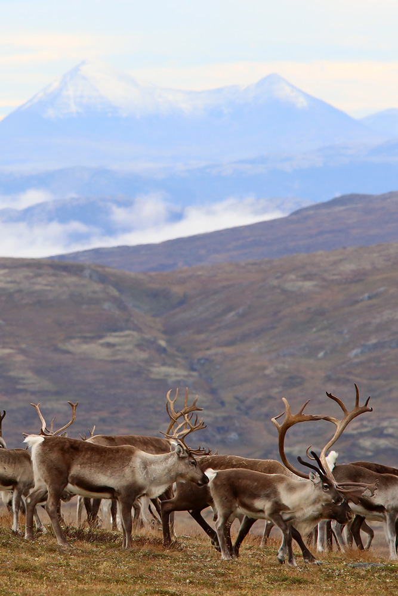
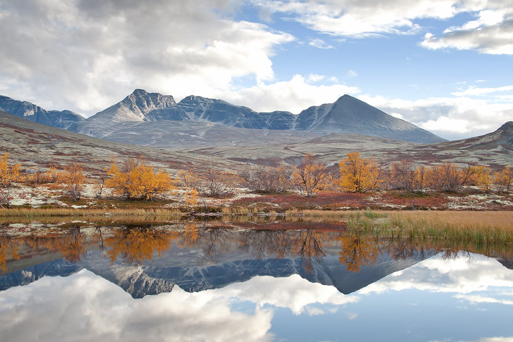
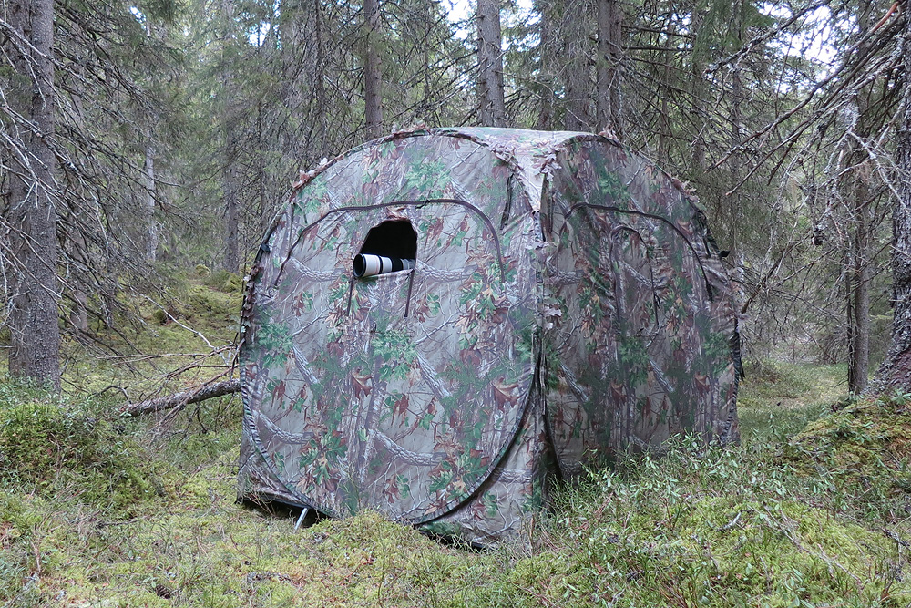

Mine fototips
For meg fungerer det best med følgende to hovedregler; kameraet må være med, og man må planlegge. I tillegg hjelper det selvfølgelig å være mye ute. 
Den første regelen handler mye om vane. Når jeg kjører bil på skogsveger har jeg nesten alltid kameraet klart til bruk i passasjersetet. Mange naturfotografer har tatt flotte dyrebilder fra bil. Skal man på en ski- eller fottur må man derimot gjøre en avveining om det tyngste fotoutstyret skal være med. Et godt kompaktkamera eller mobiltelefon kan gjøre nytten for landskapsfotografering på slike turer.
Planlegging er den andre viktige grunnsteinen i naturfotografering. Hvis jeg satser på å fotografere en bestemt dyreart synes jeg det er nyttig å ha god kunnskap om arten. Da vet jeg for eksempel når arten har brunst og dermed lettere å komme innpå.
Et eksempel på planlegging er når jeg en høst skulle fotografere villrein i Forollhogna. Villreinen fotograferes enklest når jakta er over og reinen har brunst. Forollhogna nasjonalpark er stor, og man kan ikke på måfå gå inn i nasjonalparken og lete etter reinen. Da vil dagene gå uten suksess, -hvis man ikke har flaks da. Denne høsten visste jeg hvor reinen sto siste dag i jakta som var for ei uke siden. Ettersom jeg vet at reinen trekker mot vinden gikk jeg inn på yr.no og sjekket hvilken vindretning som hadde være meldt den siste uka. Ut fra dette regnet jeg ut hvor reinen sannsynligvis befant seg når jeg skulle fotografere, noe som viste seg å stemme når jeg kom dit.
Et annet eksempel på planlegging er en fototur jeg hadde til Rondane nasjonalpark. Jeg hadde nemlig sett et veldig fint bilde av et lite tjern med flotte fjell i bakgrunnen. Jeg hadde sparsomt med informasjon om hvor bildet var tatt, men visste at det var i Døråldalen i Rondane. Bildet ble grundig sammenlignet med kart over Rondane på internett, og til slutt fant jeg et sted som kunne stemme på kartet. Gleden var stor når jeg kjørte til stedet og det viste seg å stemme.
Under dyrefotografering må man ofte bruke kamuflasjetelt. Dette for å komme tilstrekkelig nærme uten å skremme dyra. Jeg bruker et telt som heter Doghouse som jeg er veldig fornøyd med. Dette har åpninger på alle fire sider som gjør at man kan fotografere i alle retninger. Det er også helt lystett, noe som er svært viktig slik at dyra ikke ser silhuettbevegelser inne i teltet. Hvis man ligger diagonalt kan man også overnatte noenlunde behagelig i dette kamuflasjeteltet, noe som er helt nødvendig når man er på tiurleik. 